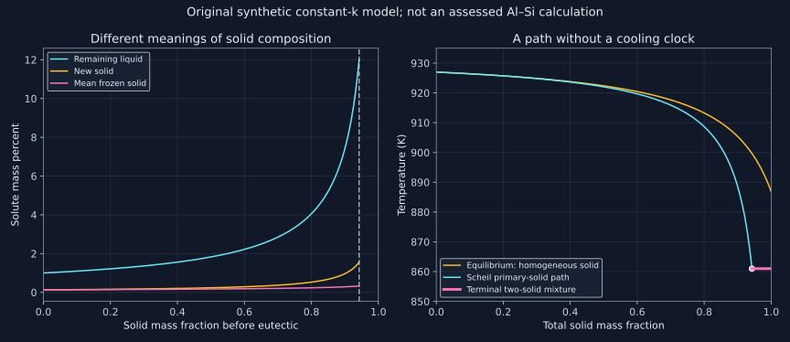

16. Scheil solidification, segregation and conservative histories
A phase diagram supplies the composition of the solid forming now. It does not say that every layer formed earlier can change to that composition. Scheil solidification preserves this distinction: new material satisfies local interface equilibrium, the remaining liquid is mixed, and the accumulated solid retains its history. A conservative calculation then predicts segregation without predicting a cooling rate.
Source and execution scope. The entire local machine transcript of lesson 35 was read sequentially. The recording contrasts equilibrium and cored solidification, introduces concentration profiles and demonstrates an Al–Si calculation in the commercial graphical interface. The derivations, synthetic numerical alloy, convergence study and nine problems below are original teaching constructions. The commercial ALDEMO result was not rerun. Our executable uses the Python standard library and stipulated constant-partition data; it is neither an assessed Al–Si database nor a quantitative welding prediction.
16.1 What a concentration profile measures
Lesson 35, 0:22–8:55. Topic span; complete derivations and synthetic calculations are teaching extensions.
A concentration profile assigns composition to position, with a defined sampling volume and composition basis. A transverse average across a specimen is different from the local composition of a dendrite core or its outer rim. Two specimens can have the same spatially averaged composition and very different microscopic segregation. Therefore a single average number is insufficient evidence of a homogeneous solid solution.
The lecture begins with contacting Cu and Ni and asks when their profile tends toward uniform composition. For a closed finite specimen, sufficient time and a stable single solution phase can produce a uniform equilibrium bulk composition. The value is determined by conserved amounts, not automatically by the appearance of equal-sized pieces. Equal masses of elements with unequal molar masses do not give equal mole fractions. In an infinite diffusion couple, no finite time makes the entire two half-spaces uniformly mixed.
If the stable state contains two phases, global equilibrium can instead have different bulk compositions on either side of an interface. Their chemical potentials agree even though their concentrations differ. Thus a persistent concentration jump is compatible with equilibrium, and a concentration gradient alone is not a universal statement of the thermodynamic driving force. Interfacial width, capillarity and coherent constraints can modify this simplest sharp-interface account. No low-temperature Cu–Ni solubility values are inferred here from the lecture's schematic diagram.
Conversely, a smoothly varying composition within one chemically stable phase can still be transient. The boundary conditions, thermodynamic stability and mobility all matter. At a two-phase boundary, the composition of the current interfacial solid is a local value. Averaging all previously formed solid generally gives another number, which is the central distinction in this chapter.
16.2 Three transport assumptions and a fourth algebraic simplification
Lesson 35, 16:23–18:44. Topic span; complete derivations and synthetic calculations are teaching extensions.
Classical Scheil–Gulliver solidification assumes a completely mixed liquid, no diffusion within solid after it forms, and local thermodynamic equilibrium between liquid and newly forming solid. There is no implied global equilibrium of all accumulated material. A perfectly mixed liquid can be produced by convection; saying its diffusivity is infinite is a limiting description of transport, rather than a measured material constant.
For an explicit binary formula, add a constant partition coefficient $k=c_s^*/c_l$, with all concentrations and phase amounts expressed on one consistent basis. Here $c$ denotes solute mass fraction, $f_s$ solid mass divided by the initial total mass, and $r=1-f_s$ remaining liquid mass fraction. The star marks newly deposited solid. A constant $k$ is an additional approximation, not a requirement of a general multicomponent CALPHAD Scheil calculation. Real partition ratios can vary with temperature, liquid composition and the phases that appear.
Complete solid diffusion gives the equilibrium lever-rule limit instead. Every existing part of a homogeneous solid phase can then readjust to the current tie-line composition. Neither limiting model specifies dendrite geometry, nucleation delay, interfacial undercooling or time. The NIST solidification overview makes the contrast between global equilibrium and local-interface Scheil calculations explicit; its limiting-model description should not be read as a universal ordering theorem for every non-equilibrium process.
“Faster cooling” does not improve every Scheil assumption indefinitely. Suppressing solid back diffusion can help one assumption while very rapid interface motion can defeat local equilibrium through solute trapping. A poorly stirred liquid defeats another. A model is selected by competing transport and interface timescales, not by the word rapid alone.
16.3 Derive the equation from a disappearing reservoir
Lesson 35, 18:44–21:35. Topic span; complete derivations and synthetic calculations are teaching extensions.
Normalize the original total mass to one and let its initial solute fraction be $c_0$. At solid fraction $f_s$, the liquid contains solute mass $r c_l$. Form an infinitesimal solid mass $df_s$ with composition $c_s^*$, and preserve all previously frozen layers. Conservation gives
$$d(r c_l)=-c_s^*df_s,\qquad dr=-df_s,\qquad r\,dc_l=(c_l-c_s^*)df_s.$$The term $-c_l df_s$ from differentiating the shrinking reservoir is essential. Treating the reservoir size as constant would predict the wrong enrichment. Insert $c_s^*=kc_l$ and divide by $r c_l$ for positive concentrations:
$$\frac{dc_l}{c_l}=(1-k)\frac{df_s}{1-f_s},\qquad \ln\frac{c_l}{c_0}=-(1-k)\ln(1-f_s).$$Consequently
$$c_l=c_0(1-f_s)^{k-1},\qquad c_s^*=k c_0(1-f_s)^{k-1}.$$For $0<k<1$, the solid rejects solute and the liquid enriches. For $k=1$, every layer and the liquid retain $c_0$. For $k>1$, early solid preferentially incorporates solute and the liquid depletes. The name “solute” does not fix which case applies: the lecture's Ni-rich first solid is compatible with choosing Ni as a component whose ratio exceeds one, whereas its later schematic enrichment example uses the opposite sense.
The mean solid concentration is found by integrating deposited solute, not by averaging endpoints:
$$M_s(f_s)=\int_0^{f_s}c_s^*(u)\,du=c_0[1-(1-f_s)^k],\qquad \bar c_s=\frac{c_0[1-(1-f_s)^k]}{f_s}.$$At zero solid amount the mean is formally undefined, but its right-hand limit is $kc_0$. Code can use that limit for plotting while preserving the distinction. The identity $f_s\bar c_s+r c_l=c_0$ verifies conservation at every interior state. For an enriching path, the new solid is richer than the accumulated mean because all earlier layers formed from less enriched liquid.
These equations use mass amounts and mass fractions throughout. A mole-based derivation works with component mole fractions and matching phase mole amounts. Switching between them in only one part of the balance is invalid. Neither derivation makes solid amount equal to a geometrical length fraction unless an additional density/geometry model justifies it.
16.4 Stop at the first new physical event
Lesson 35, 21:35–24:29. Topic span; complete derivations and synthetic calculations are teaching extensions.
Consider a deliberately synthetic binary system with $c_0=0.01$, $k=0.13$, a terminal eutectic liquid composition $c_E=0.12$, and linear liquidus $T=933-600c_l$ in kelvin. The concentrations are mass fractions, so 0.01 means one mass percent, not one atomic percent. The model numbers are selected for arithmetic and do not reproduce the lecture's Al–Si temperatures.
The initial liquidus is 927 K. Under equilibrium solidification, all solid has composition $kc_l$ and conservation gives
$$c_l^{\mathrm{eq}}=\frac{c_0}{k f_s+(1-f_s)}=\frac{c_0}{k+(1-k)r}.$$Complete equilibrium solidification occurs at $c_l=c_0/k=0.0769231$ and $T=886.846154$ K. This is below $c_E$, so the original composition does not encounter a eutectic during equilibrium freezing in this stipulated diagram. Scheil enrichment instead reaches $c_E$ while liquid remains:
$$r_E=\left(\frac{c_E}{c_0}\right)^{1/(k-1)}=0.057485960,\qquad f_s^E=0.942514040,\qquad T_E=861\ {\rm K}.$$The remaining 5.748596 mass percent is the amount of eutectic mixture formed at the terminal event, not the fraction of its solute-rich constituent. If the two terminal solids have compositions $c_\alpha=kc_E=0.0156$ and $c_\beta=0.98$, the beta share within that mixture is
$$p_\beta^E=\frac{c_E-c_\alpha}{c_\beta-c_\alpha}=0.108253837,\qquad f_\beta^{\mathrm{final}}=r_Ep_\beta^E=0.006223076.$$Thus only about 0.622308 mass percent of the final material is beta, although 5.748596 percent solidified as the eutectic mixture. The primary solid is chemically nonuniform; its mean concentration plus the terminal products still recovers exactly $c_0$. A eutectic constituent is a microstructural mixture, whereas beta is a phase. This distinction prevents a common interpretation error.
The divergence of the constant-$k$ formula as $f_s\to1$ for $k<1$ is not a prediction of infinite concentration. It signals that this branch must terminate earlier: at a eutectic, another phase, a partition-ratio change or another physical limitation. Extending the formula beyond $c_l=1$ violates its meaning. Likewise a solver's residual-liquid threshold reports a stopping convention, not proof that every last fraction solidified at that temperature.

16.5 Local equilibrium increments need a global ledger
Lesson 35, 24:29–30:36. Topic span; complete derivations and synthetic calculations are teaching extensions.
A finite-step CALPHAD calculation replaces the constant-$k$ equation by an equilibrium calculation on the current liquid reservoir. At a lower temperature, it partitions that reservoir into new solids and a smaller liquid amount. It stores the solids and their compositions and passes only the updated liquid to the next step. Re-equilibrating the entire accumulated solid at every step would instead erase the very history the Scheil model is meant to retain.
Let a local calculation return solid fraction $\theta_p$ of phase $p$ and liquid fraction $\theta_L$, each normalized to the current reservoir. If its global amount was $r_n$, then
$$\Delta f_p=r_n\theta_p,\qquad r_{n+1}=r_n\theta_L,\qquad r_n c_{i,n}=r_{n+1}c_{i,n+1}+\sum_p\Delta f_p c_{i,p}.$$Each component requires its own balance. Reporting $\theta_p$ directly as a whole-specimen increment overestimates new solid whenever $r_n<1$. The NIST Scheil algorithm page explicitly distinguishes these fractions and discusses storing the solid layers. Temperature steps, phase selection and terminal criteria are numerical/physical inputs that must be recorded.
Our constant-$k$ finite-step experiment uses prescribed successive liquid compositions $c_{\rm old}<c_{\rm new}$ up to $c_E$. For the locally formed solid $c_s=kc_{\rm new}$, the exact finite-step lever balance gives
$$\theta_s=\frac{c_{\rm new}-c_{\rm old}}{c_{\rm new}-kc_{\rm new}},\qquad r_{\rm new}=r_{\rm old}(1-\theta_s).$$This operation conserves solute exactly at each step but approximates the continuum path: all solid in the step has the endpoint composition, rather than a continuously varying deposition composition. It is admissible only when $0\le\theta_s\le1$; an excessively large step can violate this. The residual-liquid error falls from 0.002760101 with 20 intervals to 0.000315308 with 160. Good conservation therefore does not alone establish discretization accuracy. Step refinement and an independent analytic limit answer a different question.
In the primary research implementation of Bocklund and colleagues (2020), model section pp.7–8, remaining-liquid equilibrium is similarly the repeated operation. Their selected result discussion, pp.15–16, also records disagreements between calculated and measured phases and unidentified experimental regions. The work motivates composition-path screening; it does not make Scheil phase prediction exact for every build. Only those four full-text pages and the abstract were inspected here; the authors' experimental data and software were not independently reproduced.
16.6 Conserving solute does not conserve every property under averaging
Store a frozen-solid distribution as layers with masses $w_j$ and compositions $c_j$. Its current enthalpy is $\sum_j w_j h(T,c_j)$, with a matching contribution from the remaining liquid. Replacing all those layers by their mean composition preserves solute because concentration is linear in the material balance. It need not preserve enthalpy if the phase's composition dependence is nonlinear.
For an original illustrative specific-enthalpy function $h(T,c)=h_0(T)+A(T)c+B(T)c^2$, normalize within the primary solid. The exact difference between evaluating every layer and evaluating the mean is
$$\langle h(T,c)\rangle-h(T,\langle c\rangle)=B(T)\operatorname{Var}(c).$$The sign depends on curvature; this is not always a positive error. In our synthetic path at the terminal event, the concentration variance is $6.805318\times10^{-6}$. For $B=10^6$ J/kg, the mean-composition shortcut understates the primary-solid enthalpy by 6.805318 J/kg of primary solid. This is an explicit counterexample to treating an averaged composition as a complete record of thermal history. The total specimen discrepancy would additionally be multiplied by its primary-solid mass fraction.
The moments follow directly from deposition. For $2k\ne1$,
$$\langle c^2\rangle=\frac{(kc_0)^2}{f_s}\frac{1-r^{2k-1}}{2k-1}.$$At $k=1/2$, take the continuous logarithmic limit $-(kc_0)^2\ln r/f_s$. A finite terminal $r>0$ keeps these moments finite even where an unphysical extension to complete freezing would diverge. Thermal-property calculations should state whether they retain layer distributions, use a mean-composition approximation, or adopt another closure.
16.7 A solidification path is not a clock
A useful back-diffusion indicator is $\mathrm{Fo}_s=D_s t/\ell_s^2$, comparing diffusion time with the period available across a chosen solid length. With $\ell_s=10^{-5}$ m and $D_s=10^{-14}$ m²/s, times 0.1 and 100 s give $10^{-5}$ and $10^{-2}$. These are stipulated illustrative scales. The classical Scheil formula uses neither time, so it produces the same composition-versus-fraction path for both.
A liquid-mixing criterion uses its own length, diffusivity and possibly convective mixing time. With $D_l=10^{-8}$ m²/s across the same illustrative length, the diffusion-based ratios are 10 and 10,000. These comparisons show how liquid mixing and suppressed solid diffusion can coexist. They do not establish interface equilibrium, which requires a separate comparison of interface motion with atomic redistribution. They also do not turn the Scheil path into a prescribed cooling schedule.
Cracking assessments additionally require mechanical constraint, stress/strain development, feeding and a suitable criterion. A wider freezing range can be relevant without being a complete cracking law. The lecture's practical warning is therefore interpreted as a reason to inspect segregation and terminal products, not as a quantitative defect prediction. Back diffusion, finite liquid transport, solute trapping, remelting and solid-state transformation are separate model extensions.
16.8 Execute conservation and convergence separately
Download the complete standard-library program and run python code/ch16_scheil_conservation.py from this project directory. It checks the analytic balance, terminal two-phase split, every finite-step ledger, refinement errors and the nonlinear-enthalpy counterexample. Numbers are synthetic. The assertions establish the displayed mathematical examples, not agreement with an experiment.
"""Conservative synthetic Scheil limits; no assessed alloy or commercia\
l GUI."""
from math import exp, log, isclose, sqrt
C0, K, CE = 0.01, 0.13, 0.12 # mass fractions, dimensionless partition ratio
TM, SLOPE = 933.0, -600.0 # kelvin; kelvin per unit solute mass fraction
def liquid(fs):
return C0 * (1.0 - fs) ** (K - 1.0)
def average_solid(fs):
if fs == 0.0:
return K * C0 # right-hand limit, no finite solid amount yet
return C0 * (1.0 - (1.0 - fs) ** K) / fs
re = (CE / C0) ** (1.0 / (K - 1.0))
fe = 1.0 - re
te = TM + SLOPE * CE
tl = TM + SLOPE * C0
tsolid_eq = TM + SLOPE * C0 / K
assert C0 < K * CE and 0 < re < 1
print(
(
f"Synthetic path: liquidus="
f"{tl:.6f}"
f" K, equilibrium solidus="
f"{tsolid_eq:.6f}"
f" K, eutectic="
f"{te:.6f}"
f" K"
)
)
for fs in (0.5, 0.9):
cl = liquid(fs)
cs = K * cl
avg = average_solid(fs)
ceq = C0 / (K + (1 - K) * (1 - fs))
assert isclose(fs * avg + (1 - fs) * cl, C0, abs_tol=1e-14)
print(
(
f"fs="
f"{fs:.1f}"
f": liquid="
f"{cl:.9f}"
f", new solid="
f"{cs:.9f}"
f", mean solid="
f"{avg:.9f}"
f", equilibrium liquid="
f"{ceq:.9f}"
)
)
print(
(
f"Eutectic starts: primary solid="
f"{fe:.9f}"
f", residual liquid="
f"{re:.9f}"
f", liquid composition="
f"{liquid(fe):.9f}"
)
)
cbeta = 0.98
calpha = K * CE
beta_in_eut = (CE - calpha) / (cbeta - calpha)
final_beta = re * beta_in_eut
primary_solute = fe * average_solid(fe)
assert isclose(primary_solute + re * CE, C0, abs_tol=1e-14)
assert isclose(
primary_solute + re * (1 - beta_in_eut) * calpha + final_beta * cbeta,
C0,
abs_tol=1e-14,
)
print(
(
f"Terminal mixture: beta within eutectic="
f"{beta_in_eut:.9f}"
f", final beta mass fraction="
f"{final_beta:.9f}"
f", final total solute="
f"{C0:.9f}"
)
)
def stepped(n):
r = 1.0
old = C0
stored = 0.0
for j in range(1, n + 1):
new = C0 + (CE - C0) * j / n
cs = K * new
theta = (new - old) / (new - cs)
assert 0 <= theta <= 1
df = r * theta
rnew = r * (1 - theta)
stored += df * cs
assert isclose(stored + rnew * new, C0, abs_tol=2e-14)
r, old = rnew, new
return r, stored
errors = []
for n in (20, 40, 80, 160):
rn, mn = stepped(n)
err = abs(rn - re)
errors.append(err)
print(
(
f"Liquid-composition steps="
f"{n}"
f": residual="
f"{rn:.9f}"
f", absolute error="
f"{err:.9f}"
f", conservation PASS"
)
)
assert all(b < a for a, b in zip(errors, errors[1:]))
# Composition nonlinear enthalpy is not preserved by replacing all layers by
# their mean.
first = C0 * (1 - re**K)
second = (K * C0) ** 2 * (1 - re ** (2 * K - 1)) / (2 * K - 1)
variance = second / fe - (first / fe) ** 2
assert variance > 0
B = 1e6 # J/kg coefficient multiplying c^2, purely illustrative
print(
(
f"Frozen-solid concentration variance="
f"{variance:.12f}"
f"; layer-minus-mean enthalpy="
f"{B * variance:.6f}"
f" J/kg of primary solid"
)
)
# Different time histories give exactly the same classical path.
ls = 1e-5
ds = 1e-14
dm = 1e-8
mix_length = 1e-5
for time in (0.1, 100.0):
fos = ds * time / ls**2
fol = dm * time / mix_length**2
print(
(
f"Clock illustration t="
f"{time:.1f}"
f" s: Fo_s="
f"{fos:.6f}"
f", Fo_liquid="
f"{fol:.1f}"
f"; path itself has no clock"
)
)
assert isclose(liquid(0), C0) and isclose(average_solid(0), K * C0)
for k in (1.0, 2.0):
cl = C0 * (1 - 0.5) ** (k - 1)
assert isclose(cl, C0) if k == 1 else cl < C0
print(
(
"Endpoint/partition checks: k=1 no segregation; k>1 depletes liquid; "
"classical path stopped before unphysical divergence"
)
)
Synthetic path: liquidus=927.000000 K, equilibrium solidus=886.846154 K, eutectic=861.000000 K fs=0.5: liquid=0.018276629, new solid=0.002375962, mean solid=0.001723371, equilibrium liquid=0.017699115 fs=0.9: liquid=0.074131024, new solid=0.009637033, mean solid=0.002874331, equilibrium liquid=0.046082949 Eutectic starts: primary solid=0.942514040, residual liquid=0.057485960, liquid composition=0.120000000 Terminal mixture: beta within eutectic=0.108253837, final beta mass fraction=0.006223076, final total solute=0.010000000 Liquid-composition steps=20: residual=0.054725859, absolute error=0.002760101, conservation PASS Liquid-composition steps=40: residual=0.056173825, absolute error=0.001312135, conservation PASS Liquid-composition steps=80: residual=0.056846896, absolute error=0.000639063, conservation PASS Liquid-composition steps=160: residual=0.057170652, absolute error=0.000315308, conservation PASS Frozen-solid concentration variance=0.000006805318; layer-minus-mean enthalpy=6.805318 J/kg of primary solid Clock illustration t=0.1 s: Fo_s=0.000010, Fo_liquid=10.0; path itself has no clock Clock illustration t=100.0 s: Fo_s=0.010000, Fo_liquid=10000.0; path itself has no clock Endpoint/partition checks: k=1 no segregation; k>1 depletes liquid; classical path stopped before unphysical divergence
16.9 Problems with complete solutions
1. Why can a concentration jump persist at equilibrium?
Explain why equal chemical potentials do not require equal composition across two phases, and distinguish this from a transient gradient in one stable phase.
Solution
Equilibrium minimizes total Gibbs energy subject to conserved component amounts. Transferring each component between phases gives equality of its chemical potentials. Each phase has its own chemical-potential-versus-composition function; the same chemical potential can therefore occur at different compositions. The tie line locates those two values. In contrast, within a single stable homogeneous phase under uniform temperature/pressure and absent other fields, a persistent chemical-potential gradient generally drives transport. A concentration jump between phases and a transient gradient within one phase are different situations. Finite interface structure and coherent stresses need additional terms.
2. Locate the shrinking-reservoir term
Derive the concentration equation from liquid solute conservation and explain the error in writing $r\,dc_l=-c_s^*df_s$.
Solution
The disappearing liquid mass also removes its previous solute content. Since $d(r c_l)=r\,dc_l+c_l\,dr$ and $dr=-df_s$, conservation gives $r\,dc_l-c_l\,df_s=-c_s^*df_s$. Thus $r\,dc_l=(c_l-c_s^*)df_s$. Omitting the reservoir derivative predicts negative liquid-concentration change whenever solid forms with positive solute concentration, even when solute is rejected. For constant $c_s^*=kc_l$, the correct sign is enrichment for $k<1$, no change for $k=1$ and depletion for $k>1$.
3. New solid is not the mean solid
At $f_s=0.9$ in the synthetic model, calculate the current liquid, new solid and accumulated mean solid, and verify the global balance.
Solution
With $r=0.1$, the liquid is $0.01(0.1)^{-0.87}=0.074131024$. Its new interfacial solid has composition $0.13c_l=0.009637033$. The accumulated mean is $0.01[1-(0.1)^{0.13}]/0.9=0.002874331$. Accordingly $0.9(0.002874331)+0.1(0.074131024)=0.010000000$ within displayed rounding. Equating the whole solid to the current interfacial composition would instead create solute. The mean lies below the new layer because previous layers formed from less enriched liquid.
4. Distinguish eutectic mixture from beta phase
Use the stipulated terminal compositions to calculate the residual-liquid amount and final beta fraction. Why is the equilibrium eutectic amount zero?
Solution
Solving $0.12=0.01r^{-0.87}$ gives $r_E=0.057485960$. The beta share within the terminal mixture is $(0.12-0.0156)/(0.98-0.0156)=0.108253837$, so its whole-specimen mass fraction is $0.057485960(0.108253837)=0.006223076$. For equilibrium freezing, the last liquid reaches $c_0/k=0.0769231$, less than $c_E=0.12$, and disappears earlier. The original alloy lies below the terminal alpha composition 0.0156; its equilibrium path therefore has no remaining liquid at the eutectic. Scheil retains composition history and reaches a different terminal state.
5. Audit local and global fractions
A reservoir occupies 0.2 of the specimen. An equilibrium step returns 0.1 solid and 0.9 liquid normalized within that reservoir. Find the specimen increments. Then derive the finite-step theta formula.
Solution
The new solid increment is $0.2(0.1)=0.02$ and remaining liquid is $0.2(0.9)=0.18$. The previously frozen 0.8 remains in the ledger. For a single new solid, the local composition balance is $c_{\rm old}=(1-\theta)c_{\rm new}+\theta c_s$. Rearranging gives $\theta=(c_{\rm new}-c_{\rm old})/(c_{\rm new}-c_s)$. Setting $c_s=kc_{\rm new}$ yields the program's expression. Admissibility requires theta between zero and one; a failed inequality calls for a smaller step or a different phase/event treatment, not clipping away a conservation defect.
6. Does exact conservation establish numerical accuracy?
Interpret the four refinement errors and estimate the observed order using the 80- and 160-interval results.
Solution
The absolute residual errors are 0.002760101, 0.001312135, 0.000639063 and 0.000315308 as the interval count doubles. The last error ratio is about 2.027, giving order $\log_2(2.027)\approx1.019$, consistent with first-order convergence. Each ledger already conserves exactly to floating tolerance, so the path error arises from treating an entire step as endpoint-composition solid. Conservation checks an invariant; refinement checks the continuum approximation. Neither check alone proves the assumed material model is accurate.
7. A mean concentration loses enthalpy information
For equal-mass layers at concentrations 0.01 and 0.03, evaluate the averaging error for $h=h_0+Ac+10^6c^2$ J/kg. Generalize the result.
Solution
The mean concentration is 0.02. The second moment is $(0.01^2+0.03^2)/2=0.0005$, while its mean squared is 0.0004. The variance is 0.0001, so layerwise enthalpy exceeds mean-composition enthalpy by 100 J/kg. Constant and linear terms cancel. In general the quadratic coefficient times variance is the exact difference. A negative quadratic coefficient reverses the sign; zero variance or zero curvature makes the shortcut exact for this function. Real thermal calculations require a justified composition-dependent property model.
8. When do the moment formula and phase branch change?
Find the second-moment expression at $k=1/2$ and explain why extrapolating a constant partition coefficient to zero remaining liquid can be misleading.
Solution
Integrating $(kc_0)^2(1-u)^{2k-2}$ at $k=1/2$ gives $-(kc_0)^2\ln(1-f_s)$, then dividing by $f_s$ gives the mean second moment. This is the continuous limit of the stated quotient, not a genuine singularity at $k=1/2$ for finite remaining liquid. A divergence as remaining liquid vanishes can instead arise from extending an enriching constant-k branch beyond its physical domain. Our branch reaches a eutectic with $r_E>0$; its subsequent two-solid event must be handled separately.
9. Why is an arbitrarily fast quench not automatically Scheil?
Identify the independent conditions behind negligible back diffusion, well-mixed liquid and local interface equilibrium. Explain what is missing from a temperature-versus-solid-fraction curve.
Solution
A small solid diffusion ratio $D_st/\ell_s^2$ supports frozen composition; fast liquid mixing relative to deposition supports a uniform reservoir; sufficiently rapid interfacial atomic redistribution relative to interface advance supports local equilibrium. Increasing cooling speed can help the first and hurt either of the others. A temperature–fraction curve supplies no unique time history, interface speed, geometry or mechanical constraint. A cooling schedule needs a heat-flow/energy model; cracking requires further mechanical and feeding information. The classical path can inform those models without replacing them.